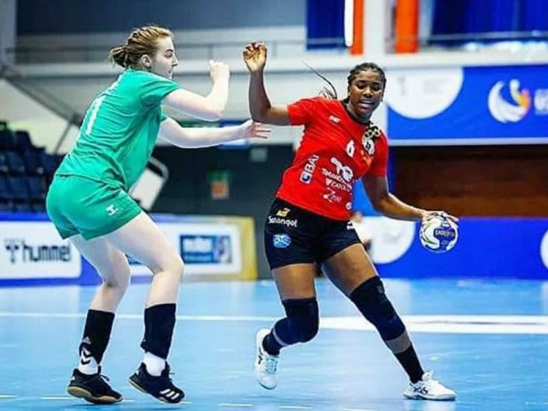
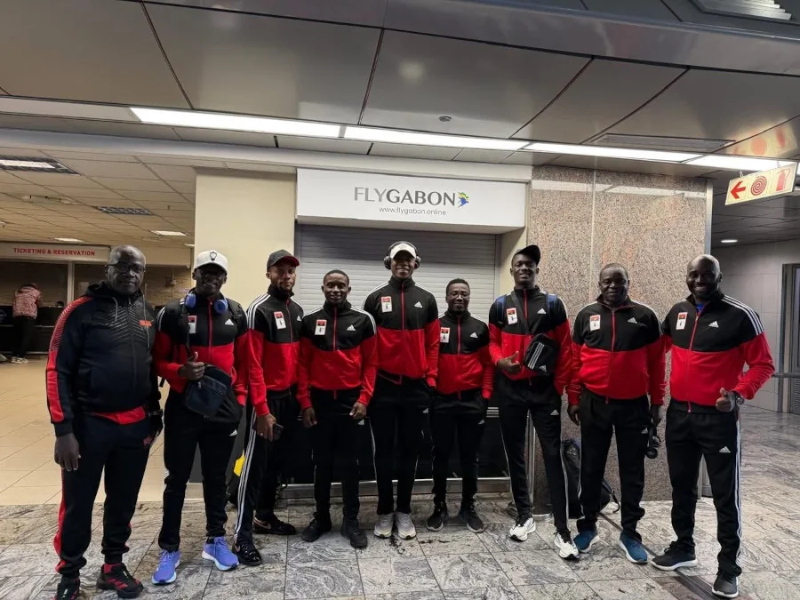

Outras Modalidades
Outras modalidades como Voleibol, andebol e artes marciais também têm crecido em Angola. O País tem investido cada vez mais na formação de atletas e na realização de competições internacionais, reforçando o seu papel no desporto africano.
Andebol angolano continua a crescer

O andebol é uma das modalidades importantes no país, com atletas que representam Angola em competições nacionais e internacionais.
A seleção feminina de andebol continua a ser uma das mais fortes do continente africano. Com várias conquistas recentes, a equipa mantém-se como favorita nas competições internacionais.
// Março de 2026
Clubes como 1º de Agosto e Petro de Luanda lideram o campeonato
As equipas mais tradicionais do andebol continuam a destacar-se no campeonato nacional, com jogos competitivos.
//2026
O Voleibol ganha destaque em Angola
O voleibol tem conquistado cada vez mais espaço no cenário desportivo. O aumento de competições e o surgimento de novos talentos mostram o crescimento da modalidade.
Seleção Angolana de voleibol participa em competições africanas
A seleção nacional de voleibol continua a representar Angola em torneios internacionais, buscando melhorar o seu desenpenho e ganhar experiência.
Ténis em crescimento no país
O ténis começa a ganhar mais praticantes em Angola, com iniciativas que visam desenvolver jovens talentos e expandir a modalidade.
Judocas destacam-se em competições
Atletas angolanos de judô têm representado o país em competições internacionais, demostrando evolução e dedicação à modalidade.
Formação impulsiona o judô nacional
O investimento na formação de jovens atletas tem sido fundamental para o crescimento do judô no país, preparando futuras gerações para competições de alto nível.
Atletismo prepara novos talentos nacionais

Atletas angolanos continuam a treinar para melhorar marcas e representar o país em grandes competições.